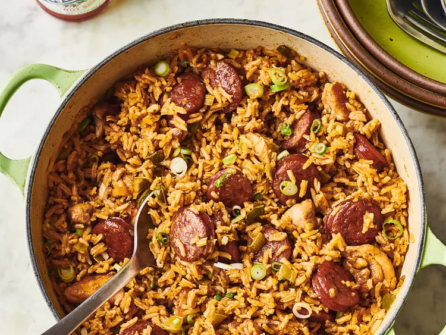

A spicy jambalaya with chicken, andouille sausage, rice, and Cajun seasonings that's easy to make in one pot.
Jambalaya is a one-pot dish that's made with rice, meat or seafood, and vegetables. With French and Spanish influences, jambalaya is quite similar to paella.
The name "jambalaya" likely comes from the Provençal word "jambalaia," which means mishmash.